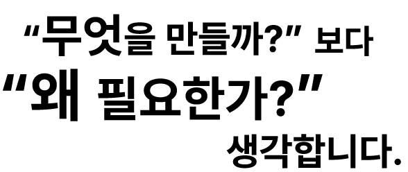

01
기획
사용자의 필요와 목적을 먼저 파악하고, 무엇을 전달해야 하는지 핵심을 정리합니다.
PROFILE 01
사용자의 시선에서 시작해
생각을 구조로 만드는 기획자입니다.
MY OVERVIEW
필요한 정보를 찾고, 흐름을 정리하고,
사람이 편하게 사용할 수 있는 형태로 만듭니다.

웹디자인, 실무 행정, 고객 상담과 콘텐츠 제작 경험을 바탕으로 문제를 발견하고 해결 과정 전체를 설계합니다.
MY STRENGTHS
사용자의 필요와 목적을 먼저 파악하고, 무엇을 전달해야 하는지 핵심을 정리합니다.
흩어진 정보와 아이디어를 화면과 콘텐츠의 자연스러운 흐름으로 연결합니다.
처음 보는 사람도 이해하고 사용할 수 있도록 쉬운 말과 분명한 동선을 고민합니다.
WORKING PROCESS
불편과 목적을 찾습니다.
핵심과 우선순위를 정합니다.
정보와 화면 흐름을 만듭니다.
확인하고 더 쉽게 다듬습니다.